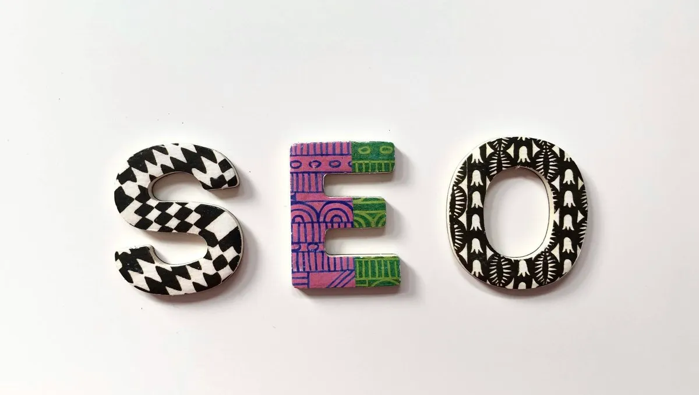

Vodič za učenje optimizacije sajta za pretraživače
Šta je SEO optimizacija
Dakle SEO optimizacija ili na engleskom u originalu "search engine optimization" je način da prilagodimo naš sajt zahtevima algoritama pretraživačkih mašina kao što su google,bing,yahoo itd da bi smo postigli što bolji ranking na istim.
Da,u gornjoj rečenici zvuči prilično prosto,ali,optimizacija sajta je čitava nauka,postoje agencije koje se bave samo seo optimizacijom a za nas kao developere a i za naše potencijalne klijente je od ključnog značaja i uvek je cilj vrh na našem području gugl pretrage pošto je ovde gugl dominantan pretrarivač.
Dakle da nekako suzimo ovu temu i pokušamo predstaviti ovde ono esencijalno bitno sto se optimizacije tiče.
SEO je skup stotine malih radnji i ispravki na našem sajtu ili web stranici koji kao krajnji rezultat uz po neki eksterni link ka našem sajtu treba da nam pruži pristojnu poziciju u SERP-u(guglovoj organskoj pretrazi).
Ovde ćemo vam navesti samo reference gde da učite o optimizaciji sajtova i web stranica pošto bi to moglo potrajati mesecima ako bih pisao sve ovde,dakle na ovoj youtube plejlisti imate par korisnih video-a o SEO optimizaciji
Tu su objašnjene neke osnovne stvari u vezi optimizacije,zašto je važna,šta su backlinkovi itd itd.
Reference za učenje optimizacije sajta
Pored gore navedene youtube liste izvori su širom weba,ima mnogo blogova na ovu temu koji se predstavljaju stručnim a zapravo to nisu.
Ono što vam mogu preporučiti je "Moz seo forum" i "SEO Journal blog" jer su ta dva seo foruma prilično relevantni,mada,gugl često apdejtuje svoje algoritme pa ni ono što tamo pročitate a nije sasvimm novo(do 1-2 meseca starosti) može biti nerelevantno.
Postoje mesta na webu gde se mogu pratiti updejtsi gugl algoritama ali je to ako ste developer stvarno zamarajuće i zahteva vaše vreme kojeg već kao web developer nemate dovoljno.
Preko 200 guglovih algoritama prelazi preko naših stranica i sajtova i na kraju u zbiru donesu neki zaklučak i na osnovu tog zaključka nas pozicioniraju.
Sada kada ovo pišem u decembru 2024te ne smemo zanemariti ni ulogu AI(veštačke inteligencije) koju gugl takodje koristi pri oceni naših stranica.
Kao što rekoh algoritama ima mnogo a ja ću ovde pomenuti po meni dva najvažnija,prvi je Panda algoritam i on prati i uporedjuje textove da li su kopirani od nekuda ili su jedinstveni,a drugi jako vazan je Penguin algoritam koji prati linkove ka našem sajtu i donosi zaključke da li su prirodni ili kršimo gugl smernice,dakle čuvajte se algoritamskih kazni jer oporavak od istih može biti ekstremno dug(i do 2 godine).
Hvala na poseti i želim vam srećno učenje.